조경기사 (2012-03-04 기출문제)
1과목: 조경사
1. 일본에 귀화한 백제사람 노자공(路子工)이 아스카(飛鳥) 시대에 궁궐 남쪽 뜰에 수미산을 세우고 못에 오교(吳橋)를 놓았다는 기록이 있는 문헌은?
- 일본의 고사기(古事記)
- 일본의 일본서기(日本書紀)
- 한국의 삼국사기(三國事記)
- 한국의 삼국유사(三國遺事)
(정답률: 75%)

2. 동사강목(東史綱目)에 궁남지(宮南池)에 대하여 “궁성의 남쪽에 못을 파고 20여리 밖에서 물을 끌어 들이고 사방의 언덕에 버드나무를 심고, 못 속에 섬을 만들어 방장선 산을 모방하였다.”라고 기록하고 있는데 어느 때 조성한 것인가?
- 백제의 진사왕
- 백제의 무왕
- 신라의 경덕왕
- 신라의 문무왕
(정답률: 79%)
3. 양산보의 소쇄원(瀟灑園)의 성격과 거리가 먼 것은?
- 계류중심의 위락공간
- 직선적인 단상처리
- 석가산 수법
- 방지방도(方池方島)형
(정답률: 62%)
4. 르네상스시대의 프랑스와 이탈리아 조경의 차이점이 아닌 것은?
- 프랑스는 성관이 발달하였고, 이탈리아는 빌라의 큰 발달을 보게 되었다.
- 프랑스는 중세의 방어요소인 호를 호수와 같은 장식적 수경으로 전환시킨 반면에 이탈리아는 캐스케이드, 분수, 물풍금 등의 다이나믹한 수경을 나타내고 있었다.
- 프랑스정원은 이탈리아 정원보다 파르테르를 중요시 하였다.
- 프랑스정원은 경사지에 옹벽에 의해서 지지된 테라스나 평탄한 지역들이 만들어졌으며, 다양한 형태의 계단 혹은 연속적인 계단 그리고 경사로로 연결되었다.
(정답률: 81%)
5. 백제 귀족문화의 속성이 강하게 나타나는 3탑 3금당형의 3원식 가람 구조를 보이는 사례는?
- 부여 군수리 절터
- 부여 동남리 절터
- 익산 미륵사터
- 부여 정림사터
(정답률: 69%)
6. 다음 중 중국의 시대별 고서와 작자의 연결이 옳은 것은?
- 낙양명원기-당-이격비
- 유금릉제원기-명-왕세정
- 장물지-송-문진형
- 오흥원림기-청-양현지
(정답률: 57%)
7. 일본의 석조 방식에서는 기본이 되는 돌의 형태에 따라 오행석으로 분류하였다. 그 가운데 주석(主石)이 되는 돌의 이름은?
- 기각석
- 지형석
- 영상석
- 심체석
(정답률: 66%)
8. 조선시대의 선비들이 즐겨 심고 가꾸었던 사절우(四節友)에 해당하는 식물들로 구성된 것은?
- 대나무, 매화나무, 국화, 난초
- 소나무, 대나무, 매화나무, 국화
- 소나무, 전나무, 향나무, 연꽃
- 매화나무, 목단, 국화, 연꽃
(정답률: 77%)
9. 페르시아인의 이상적인 정원으로서 파라다이스에 대한 원칙적 개념 중 틀린 것은?
- 맑은 시내(水路)
- 신선한 녹음과 풍성한 과수
- 담으로 둘러싸인 곳
- 중정에 인체 조각상 설치
(정답률: 85%)
10. 미국에서 도시미화운동(都市美化運動, city beautiful movement)의 계기가 된 최초의 것은?
- 옐로우스톤(Yellowstone)국립공원
- 전원도시 운동
- 콜롬비아 박람회
- 위성도시의 성립
(정답률: 62%)
11. 이동식 정자인 사륜정(四輪亭)을 고안한 사람은?
- 이규보(1201)
- 기흥수(1210)
- 최충헌(1219)
- 홍만선(1241)
(정답률: 76%)
12. 몽창국사의 서방사(西芳寺) 정원에 대한 설명으로 옳은 것은?
- 경관의 기능적, 심미적, 객관적 묘사를 꾀하였다.
- 이끼정원 서쪽에 은사탄과 향월대를 조성하였다.
- 지동암 앞에는 담북정을 짓고 고산수석조를 조성하였다.
- 벽암록(碧巖錄)에 기술된 선의 이상향을 실현하고자 조성 하였다.
(정답률: 51%)
13. 다음 중 고산 윤선도가 경영한 별서 중 지역이 나머지 셋과 다른 곳은?
- 수정동 별서
- 부용동 별서
- 운소동 별서
- 금쇄동 별서
(정답률: 71%)
14. 과실을 심은 곳을 원(園)이라 하고 채소를 심은 곳을 포(圃)라 했으며 유(囿)는 금수를 키우는 곳을 가리킨다고 풀이해 놓은 서적은?
- 한제고
- 보원기
- 설문해자
- 동파종화
(정답률: 65%)
15. 중국 한나라의 상림원(上林園)과 관계가 없는 것은?
- 곤명호
- 견우와 직녀의 상징 조각상
- 만수산
- 돌고래 조각상
(정답률: 60%)
16. 영국에 프랑스식 정원 양식을 도입하는데 공헌한 사람들 중 관계없는 인물은?
- 르노트르(Andre Le Nptre)
- 로즈(John Rose)
- 페로(Claude Perrault)
- 포프(Alexander Pope)
(정답률: 62%)
17. 송시대(宋時代)의 유학자인 주렴계(주돈이)가 주창한 애련설(愛蓮設)과 관계가 없는 명칭은?
- 경복궁 후원에 있는 향원정(香遠亭)
- 전라남도 화순군에 있는 임대정(臨對亭)
- 경상북도 안동군에 있는 도산서당의 정우당(淨友塘)
- 강원도 강릉에 있는 선교장의 활래정(活來亭)
(정답률: 63%)
18. 사방이 회랑으로 둘러싸이고 각 회랑 중앙에서 중정으로 향한 출입구가 열려 원로를 구성하는 한편 그 교차점인 중정의 중앙에 샘이나 수반, 분수가 있는 정원의 형태는?
- 고대 로바의 정원
- 스페인의 파라다이스 가든(paradise garden)
- 중세의 클로이스터 가든(cloister garden)
- 중세의 미로(maze)
(정답률: 78%)
19. 다음 중 조선왕릉(王陵)에 남아있는 건물이 아닌 것은?
- 정자각(丁字閣)
- 수복방(守僕房)
- 비각(碑閣)
- 독성각(獨聖閣)
(정답률: 59%)
20. 고대 로마의 시대의 품페이의 주택정원의 특징에 관한 설명으로 옳지 않은 것은?
- 뜰은 건축물에 의하여 둘러싸여 있다.
- 페리스틸리움의 식재는 주로 오점식재(quincunx)법에 의하여 행하여졌다
- 지스터스(xystus)는 과수원이나 채소밭으로 구성되어 있으나 정원시설이 갖추어지는 일이 있다.
- 아트리움(atrium)에는 바닥에 식물을 심을 수 있도록 흙이 깔려 있다.
(정답률: 73%)
2과목: 조경계획
21. 다음 자연공원법 시행령의 내용 중 대통령령으로 정하는 규모로 맞는 것은?
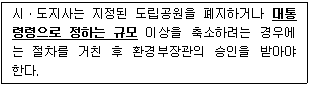
- 3만제곱미터
- 5만제곱미터
- 10만제곱미터
- 20만제곱미터
(정답률: 67%)
22. 주택건설기준 등에 관한 규정에 제시되어 있지 않은 기준은?
- 주택의 구조ㆍ설비
- 주택의 재개발
- 부대시설
- 복리시설
(정답률: 59%)
23. 조경설계기준상의 운동시설의 계획시 야구장의 적정 소요면적(최소규격)으로 옳은 것은?
- 5630m2
- 6889m2
- 8960m2
- 11030m2
(정답률: 57%)
24. 레크레이션 계획은 접근 방법에 따라 서로 다른 결과를 낳을 수 있다. 대상지가 가연공원으로 지표를 한계수용력 및 환경영향으로 할 때 계획의 접근방법으로 가장 적합한 것은?
- 자원형
- 활동형
- 경제형
- 형태형
(정답률: 76%)
25. 인간 행동의 움직임을 부화하한 표시법(motion symbol)을 창안하여 설계에 응용한 사람은?
- Ian L.Mcharg
- Philip Thiel
- Laurence Halprin
- Christopher J.Jones
(정답률: 76%)
26. 자연공원의 적정 수용력을 결정하는 방법 중 이용자가 만족스러운 경험을 갖기 위해서 일정지역에 어느 정도의 인원을 수용하는 것이 적절할 것인가를 기준으로 삼는 수용력은?
- 물리적 수용력
- 심리적 수용력
- 생태적 수용력
- 특수 수용력
(정답률: 74%)
27. 다음 [보기]에서 설명하는 계약은?
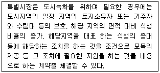
- 생물다양성관리계약
- 녹지활용계약
- 녹화계약
- 경관협정
(정답률: 56%)
28. 다음 중 “생태ㆍ경관보전지역”에 대한 설명으로 옳은 것은?
- 생물다양성을 높이고 야생 동ㆍ식물의 서시지간의 이동 가능성 등 생태계의 연속성을 높이거나 특정한 생물종의 서식조건을 개선하기 위하여 조성하는 생물 서식공간
- 생물다양성이 풍부하여 생태적으로 중요하거나 자연경관이 수려하여 특별히 보전할 가치가 큰 지역으로서 환경부장관이 지정ㆍ고시하는 지역
- 야생 동ㆍ식물의 서식지가 단절되거나 훼손 또는 파괴되는 것을 방지하고 생태계의 연속성을 유지를 위하여 설치하는 인공 구조물ㆍ식생 등의 생태적 공간
- 사람의 접근이 사실상 불가능하여 생태계의 훼손이 방지되고 있는 지역 중 군사상의 목적으로 이용되는 외에는 특별한 용도로 사용되지 아니하는 무인도
(정답률: 70%)
29. 자연공원에 있어서 오물처리문제의 일반적인 특징을 잘못 설명한 것은?
- 발생하는 쓰레기는 대부분 소각하기 쉬운 것이다.
- 타지역에서 일시적으로 방문한 사람들에 의해 초래된다.
- 방문하는 이용자 수에 의해 발생 쓰레기의 양이 좌우된다.
- 통제를 하지 않으면 인간의 행위에 따라서 쓰레기의 산재(散在)하는 범위가 광범위하다.
(정답률: 76%)
30. 1875년 영국에서 불결한 도시주거환경을 제거하기 위해 새로이 건설되는 주택의 상하수도 시설과 정원 크기 및 주변 도로의 폭 등 주거환경기준을 규제하는 목적으로 제정된 법은?
- 건축법(building code)
- 공중위생법(public health act)
- 단지조성법(site planning act)
- 미관지구에 관한 법(law of beautification district)
(정답률: 63%)
31. 국토의 계획 및 이용에 관한 법률에 대한 설명 중 틀린 것은?
- 국토의 용도구분은 도시지역, 관리지역, 농림지역, 자연환경보전지역으로 구분한다.
- 용도지역의 지정시 도시지역은 주거지역, 상업지역, 공업지역, 보전관리지역, 개발제한지역으로 구분된다.
- 국토해양부장관, 시ㆍ도지사 또는 대도시 시장은 용도지구의 지정 또는 변경을 도시관리계획으로 결정한다.
- 국토해양부장관은 국방부장관의 요청이 있어 보안상 도시의 개발을 제한할 필요가 있다고 인정되면 개발제한 구역의 지정 또는 변경을 도시관리계획으로 결정할 수 있다.
(정답률: 45%)
32. 도심지 내 소공원의 입지선정 기준 중 가장 중요한 것은?
- 안전성
- 접근성
- 쾌적성
- 상징성
(정답률: 75%)
33. 특이성비를 이용한 Leopold의 주된 접근 방법은?
- 현상학적 접근방법
- 경관자원적 접근방법
- 인간행태적 접근방법
- 경제학적 접근방법
(정답률: 64%)
34. 경사면에 장방형의 건물을 배치 할 경우 배치 방법이 가장 경제적이고 기존 지형과의 조화가 두드러진 것은?
- 건물의 긴 변이 등고선에 수직되게 배치한다.
- 건물의 긴 변이 등고선에 45°방향으로 배치한다.
- 건물의 긴 변이 등고선에 30°방향으로 배치한다.
- 건물의 긴 변이 등고선에 평행되게 배치한다.
(정답률: 70%)
35. 다음 중 영역성(territoriality)의 설명으로 옳지 않은 것은?
- 영역은 주로 집을 중심으로 고정된 지역 혹은 공간을 말한다.
- 영역성은 사람뿐만 아니라 일반 동물에서도 흔히 볼 수 있는 행태이다.
- 공적 영역은 배타성이 가장 높으며 일정시의 이용자는 잠재적인 여러 이용자 가운데의 한사람 일 뿐이다.
- 영역적 행태는 필요한 경우 타인의 침입을 방어하는 욕구를 나타낸다.
(정답률: 53%)
36. 레크레이션의 양적 공간 계획시 최대 일용량(Daily capacity) 이란?
- 최대시이용객수/회전율
- 1일 이용객수×회전율
- 월 이용객수/30
- 년 이용객수/365
(정답률: 55%)
37. 최대일집중율(피크율)이 가장 높은 조경계획 대상은?
- 골프장
- 스키장
- 국립공원
- 유원지
(정답률: 69%)
38. 조경과 관련 있는 분야로 현상학적 접근을 바탕으로 문화경관, 장소성 등에 관심이 많은 학문 분야이며 아이켄, 렐프, 튜안 등의 학자들이 대표적인 학문 분야는?
- 인문지리학
- 건축학
- 도시계획학
- 인문생태학
(정답률: 52%)
39. Clarence A.Perry 의 근린주구(近隣住區) 개념과 거리가 먼 것은?
- 초등학교 1개의 학구(學區)를 기준단위로 규모는 반경 400m 정도이며, 초등학교가 근린주구의 중앙에 위치 한다.
- 그 단위는 통과교통이 내부를 관통하지 않고 용이하게 우회할 수 있는 충분한 넓이의 간선도로에 의해 구획되어야 한다.
- 근린쇼핑시설은 도로 결절점이나 인접 근린주구 내의 유사지구 부근에 위치한다.
- 보행로와 차도 혼용도로를 설치한다.
(정답률: 71%)
40. 지역의 환경을 쾌적하게 조성하기 위하여 대통령령으로 정하는 용도와 규모의 건축물은 일반이 사용할 수 있도록 대통령령으로 정하는 기준에 따라 소규모 휴식시설 등의 공개 공지 또는 공개 공간을 의무적으로 설치하지 아니하여도 되는 곳은? (단, 건축법을 적용한다.)
- 전용주거지역
- 일반주거지역
- 준주거지역
- 준공업지역
(정답률: 56%)
3과목: 조경설계
41. 다음 중 공원등을 설계할 때 설계기준으로 틀린 것은?
- 광원은 원칙적으로 수명이 긴 수은등을 적용한다.
- 운동장 놀이터의 정방형 시설면적에 따라 350m2 미만은 1등용 1기를 배치한다.
- 공원의 진입부ㆍ보행공간ㆍ놀이공간ㆍ광장 등 휴게공간ㆍ운동 공간에 배치한다.
- 주두형 등주인 경우 그 높이는 2.7 ~ 4.5m를 표준으로 하되, 상징적인 경관의 창출 등 특수한 목적을 위한 경우에는 그 목적 달성에 적합한 높이로 한다.
(정답률: 58%)
42. 미끄럼대의 미끄럼판 설계기준 중 틀린 것은?(단, 조경설계기준을 적용한다.)
- 1인용 미끄럼판의 폭은 40~50㎝를 기준으로 한다.
- 미끄럼판은 높이 1.2m(유아용)~2.2m(어린이용)의 규격을 기준으로 한다.
- 미끄럼판의 기울기는 45~50°로 재질을 고려하여 설계한다.
- 미끄럼판 출입구의 폭은 미끄럼판의 폭과 같은 크기로 한다.
(정답률: 60%)
43. 축척이 1/50000 인 지형도 위에 어떤 사면의 경사를 알기 위해 측정한 계곡선 간의 수평거리가 1.4㎝ 이었을 때 이 사면의 경사도는 약 얼마인가?
- 10.5%
- 14.3%
- 17.4%
- 20.2%
(정답률: 58%)
44. 다음 [보기]의 ( )안에 적합한 값은?
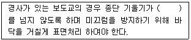
- 3%
- 5%
- 8%
- 15%
(정답률: 54%)
45. 리튼(Litton)이 제시한 자연경관에서의 경관 훼손가능성 (Visual Vulnerability) 에 대한 설명 중 틀린 것은?
- 저지대보다 고지대가 경관 훼손가능성이 높다.
- 어두운 곳보다 밝은 곳이 경관 훼손가능성이 높다.
- 급경사지보다 완경사지가 경관 훼손가능성이 높다.
- 혼효림보다 단순림이 경관 훼손 가능성이 높다.
(정답률: 59%)
46. 제도용 A3 용지의 크기는?
- 298㎜×597㎜
- 297㎜×420㎜
- 420㎜×594㎜
- 594㎜×841㎜
(정답률: 59%)
47. 도면에서 굵은 실선으로 표시하여야 하는 것은?
- 절단선
- 해칭선
- 단면선
- 치수선
(정답률: 55%)
48. 색채와 모양에 대한 공감각이 삼각형의 형태를 상징하는 색으로 명시도가 높아 날카로운 이미지를 갖고 있어서 항상 유동적이고 운동량이 많은 느낌을 주는 색은?
- 빨간색
- 녹색
- 노란색
- 보라색
(정답률: 57%)
49. 도면의 척도에서 현척(실척. full scale)에 대한 설명으로 옳은 것은?
- 실물과 동일한 크기로 그린다.
- 실물의 실제 크기보다 축소해서 그린다.
- 실물의 실제 크기보다 조금 확대해서 그린다.
- 비율은 1:10, 1:20, 1:50, 1:100, 1:200으로 그린다.
(정답률: 75%)
50. 한국의 전통색채 및 색채의식에 대한 설명 중 틀린 것은?
- 음양오행사상을 기본으로 한다.
- 오정색과 오간색의 구조로 되어있다.
- 색채의 기능적 실용성 보다는 상징성에 더 큰 의미를 두었다.
- 계급서열과 관계없이 서민들에게도 모든 색채 사용이 허용되었다.
(정답률: 70%)
51. 경관의 인지 과정에서 관찰자의 가치에 영향을 받아 결정되는 요소는?
- 시각정보의 지각
- 시각특성의 인지
- 시각의 질의 해석
- 시각 양식의 파악
(정답률: 63%)
52. 루빈(E.Rubin)이 형태심리학에서 주장하는 도형(圖形, figure)과 배경(背景, ground)의 설명으로 옳지 않은 것은?
- 도형은 배경보다 더욱 가깝게 느껴진다.
- 도형은 배경에 비하여 더욱 의미있는 형태로 연상된다.
- 도형은 배경에 비하여 더욱 지배적이며 잘 기억된다.
- 도형은 물질 같은 성질을 지니며 배경은 물건 같은 성질을 지닌다.
(정답률: 74%)
53. 치수선에는 분명한 단말기호(화살표 또는 사선)를 표시한다. 다음 중 단말기호 표시에 대한 설명으로 옳지 않은 것은?
- 사선은 30도 경사의 짧은 선으로 그린다.
- 한 장의 도면에는 같은 종류의 화살표 기호를 사용한다.
- 기호의 크기는 도면을 읽기 위해 적당한 크기로 비례하여 그린다.
- 화살표는 끝이 열린 것, 닫힌 것 및 빈틈없이 칠한 것중 어느 것을 사용해도 상관없다.
(정답률: 54%)
54. 경관통제점(landscape control point)에 관계된 설명 중 옳지 않은 것은?
- 아이버슨(Iverson)의 경관분석방법
- 이용자들의 주 통행로상에 설정
- 각 경관지역 내에서 1개의 통제점을 선점
- 하천주변 경관가치의 평가에 주로 사용
(정답률: 58%)
55. 다음 중 1소점 투시도법의 특징 설명으로 옳은 것은?
- 육면체의 가운데 모서리를 중심으로 양쪽으로 각각 화면에 경사져 있다.
- 화면에 대한 경사각에 따라 30도, 45도, 60도 투시도법으로 나뉜다.
- 좌우의 소점 이외에 육면체의 높이도 지표면으로 연장하여 갈수록 좁아진다.
- 육면체의 한 면이 화면에 평행으로 놓여있어 수평 및 수직의 모서리는 연장하면 수평이 된다.
(정답률: 48%)
56. 자전거 이용시설의 구조ㆍ시설 기준에 관한 규칙은 “시설한계”의 설명 중 각각의 ( )안에 알맞은 것은?
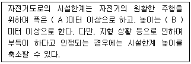
- A : 1.2, B : 1.5
- A : 1.5, B : 2.5
- A : 1.5, B : 2.0
- A : 1.2, B : 2.0
(정답률: 54%)
57. 자연경관을 대상으로 할 때 경관의 시각적 특성을 이해하기 위한 형식적 분류 항목에 해당되지 않는 것은?
- 초점경관
- 관개경관
- 세부경관
- 개방경관
(정답률: 58%)
58. 다음 그림은 무엇을 하기 위한 과정인가?
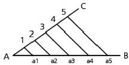
- 직선을 n 등분 하기
- 삼각형의 각도 나누기
- 직선을 주어진 비로 나누기
- 삼각형을 n 등분 하여 나누기
(정답률: 54%)
59. 포장패텬(paving pattern) 설계의 수단으로서 고려할 사항중 가장 거리가 먼 것은?
- 포장재료의 질감
- 포장재료의 견고성
- 포장재료의 색채
- 포장재료의 단위크기
(정답률: 51%)
60. 르 꼬르뷔제의 “Modulor”는 무슨 개념에 의한 것인가?
- 비례
- 리듬
- 통일
- 조화
(정답률: 67%)
4과목: 조경식재
61. 우리나라의 자생지가 울릉도인 수종은?
- Ficus carica L.
- Quercus mongolica Fisch. ex Ledeb
- Acer pseudosieboldianum Kom.
- Fagus engleriana Seemen ex Diels
(정답률: 46%)
62. 다음 중 내염성이 가장 강한 수종은?
- Alnus japonica Steud.
- Larix kaempferi Carriere
- Berberis koreana Palib.
- Ligustrum obtusifolium Siebold & Zucc
(정답률: 41%)
63. 고립목 상태로 자라고 있는 느티나무의 흉고직경은 40㎝이고 수고가 10m 이며, 단위체적당 생체 중량은 1300㎏/m3 이다. 이 나무의 근원단위 면적당 지상부의 중량은 얼마인가?(단, 수간형상 계수는 0.5, 근원직경은 흉고직경은 비례계수 α를 곱셈함으로써 얻어지고, α는 2이다. 지엽의 할증률은 0.1 이다.)
- 178.75㎏
- 357.3㎏
- 1787.5㎏
- 3575㎏
(정답률: 35%)
64. 다음 식물 중 기수 1회 우상복엽이 아닌 것은?
- 굴피나무
- 소태나무
- 물푸레나무
- 멀구슬나무
(정답률: 48%)
65. 조경식물의 기능적 이용은 건축적, 공학적, 기상학적, 미적 이용으로 구분될 수 있다. 그 중 공학적 측면에서 얻을 수 있는 효과로 가장 적합한 것은?
- 토양 침식의 조절
- 공간 분할
- 장식적인 수벽
- 강수 조절 작용
(정답률: 69%)
66. 다음 중 주로 잎을 관상하는 식물이 아닌 것은?
- 쑥부쟁이
- 관중
- 음양고비
- 돌단풍
(정답률: 56%)
67. 다음 중 가장 이식이 쉬운 수종은?
- Taxus cuspidata
- Poncirus trifoliata
- Picea abies
- Taxodium distichum
(정답률: 29%)
68. 다음 중 산성토양에서 가장 잘 견디는 수종은?
- Juglans regia Dode
- Lindera obtusiloba Blume
- Fagus engleriana Seemen ex Diels
- Quercus mongolica Fisch. ex Ledeb
(정답률: 40%)
69. 다음 참나무속 중 잎 뒷면에 성모(星毛)가 밀생하고, 잎이 대형이며 시원하고, 야성적인 미가 있어 자연풍치림 조성에 적당한 수종은?
- Quercus dentata Thunb. ex Murray
- Quercus variabilis Blume
- Quercus acutissima Carruth
- Quercus serrata Thunberg
(정답률: 45%)
70. 다음 중 수목과 열매의 명칭이 틀린 것은?
- Pinus densiflora - 구과
- Quercus dentata - 견과
- Prunus persica - 장과
- Acer pseudosieboldianum - 시과
(정답률: 45%)
71. 다음에 제시된 월평균기온자료에 의한 온량지수는 얼마인가?
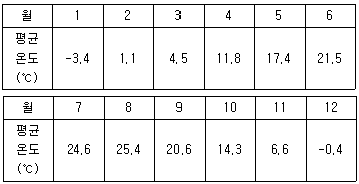
- 81.8℃
- 102.2℃
- 182.2℃
- 200.2℃
(정답률: 58%)
72. 다음 중 무궁화의 학명으로 맞는 것은?
- Lagerstroemia indica L.
- Cornus controversa Hemsl. ex Prain
- Cedrus deodara London
- Hibiscus syriacus L.
(정답률: 75%)
73. 다음 중 활엽수로 가장 크게 자랄 수 있는 수종은?
- Platanus occidentalis
- Abies koreana
- Cercis chinensis
- Rosa rugosa
(정답률: 60%)
74. 초원과 같은 거의 균질한 식생이 광대한 면적에 걸쳐 이루어진 경우에 적용하기 가장 좋은 표본추출법은?
- 계통추출법
- 대상추출법
- 전형표본추출법
- 무작위추출법
(정답률: 58%)
75. 우점도(dominance, D)를 산출하는 공식으로 맞는 것은?
- 우점도=1-다양도지수
- 우점도=1-균제도지수
- 우점도=1-밀도지수
- 우점도=1-피도지수
(정답률: 50%)
76. 식생에 대한 인간의 영향 설명으로 틀린 것은?
- 인간에 의해 영향을 받기 이전의 식생을 원식생이라 한다
- 인간에 의해 영향을 받지 않고 자연상태 그대로의 식생을 자연식생이라 한다.
- 인간에 의한 영향을 받음으로써 대치된 식생을 보상식생이라 한다.
- 변화한 입지조건하에서 인간의 영향이 제거되었을 때 예상되는 자연식생을 잠재자연식생이라 한다.
(정답률: 70%)
77. 다음 설명은 어느 수종에 관한 것인가?
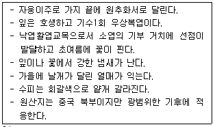
- Ginkro biloba L.
- Nerium indicum Mill.
- Pinus bungeana Zucc. ex Endl.
- Ailanthus altissima (Mill.) Swingle for. altissima
(정답률: 43%)
78. 토양에 단립(團粒)구조를 갖게 하기 위한 것으로 맞지 않는 것은?
- 배수를 좋게 한다.
- 유기질 비료를 많이 준다.
- 식질 토양에는 점토로 객토하는 것이 중요하다.
- 사질 토양은 식토로 객토하는 것이 중요하다.
(정답률: 64%)
79. 식재수법을 정형식, 자연풍경식, 자유식, 군락식으로 구분 할때 그 중 자유식재(自由植栽)수법에 해당하는 것은?
- 교호식재
- 사실적식재
- 루버형식재
- 랜덤형식재
(정답률: 49%)
80. 다음 식물 중 상록활엽만경목에 해당되는 것은?
- 송악
- 계요등
- 능소화
- 노박덩굴
(정답률: 51%)
5과목: 조경시공구조학
81. 전시와 후시의 거리를 같게 해도 소거되지 않는 오차는?
- 기차(氣差)에 의한 오차
- 시차(時差)에 의한 오차
- 구차(球差)에 의한 오차
- 레벨의 조정 불량에 따른 오차
(정답률: 49%)
82. 어떤 부지내 잔디지역의 면적 0.23ha(유출계수 0.25), 아스팔트포장지역의 면적 0.15ha(유출계수 0.9)이며, 강우강도는 20㎜/hr일 때 합리식을 이용한 총 우수유출량은?
- 0.0032 m3/sec
- 0.0075 m3/sec
- 0.0107 m3/sec
- 0.017 m3/sec
(정답률: 52%)
83. 시멘트 풍화에 대한 설명으로 옳지 않은 것은?
- 시멘트가 풍화하면 밀도가 떨어진다.
- 풍화한 시멘트는 강열감량이 감소한다.
- 풍화는 고온다습한 경우 급속도로 진행된다.
- 시멘트가 저장 중 공기와 접촉하여 공기 중의 수분 및 이산화탄소를 흡수하면서 나타나는 수화반응이다.
(정답률: 48%)
84. 조경구조물 시공순서 중 맞는 것은?
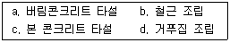
- a → d → b → c
- d → b → a → c
- a → b → d → c
- b → d → a → c
(정답률: 45%)
85. 목재의 비중에 영향을 끼치는 인자가 아닌 것은?
- 이방성
- 추재율
- 연륜폭
- 수종
(정답률: 45%)
86. 그림과 같은 방법으로 수평거리(D)를 구하려고 할 때 올바른 식은?
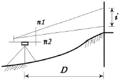
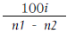
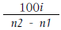
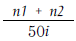
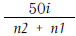
(정답률: 44%)
87. 공사방법에 있어서 전문 공사별, 공정별, 공구별로 도급을 주는 방법은?
- 분할도급
- 공동도급
- 일식도급
- 직영도급
(정답률: 70%)
88. 공사현장에서 750포대를 보관할 시멘트 창고 바닥면적은 약 얼마인가?(오류 신고가 접수된 문제입니다. 반드시 정답과 해설을 확인하시기 바랍니다.)
- 5.77m2
- 7.69m2
- 11.54m2
- 23.08m2
(정답률: 37%)
89. 다음 중 공사발주를 위하여 발주자가 작성하여야 하는 적산서류에 해당되지 않는 것은?
- 특기시방서 작성
- 공사수량 산출
- 일반관리비 계산
- 견적서 작성
(정답률: 43%)
90. 그림과 같은 단순보에 집중하중이 작용할 때 최대 굽힘 모멘트는 얼마인가?
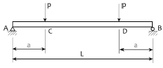
- Pa
- 2Pa
- PL
- 2PL
(정답률: 33%)
91. 지름이 d인 원형단면의 단면 2차 반지름은?
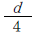
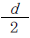
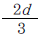
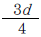
(정답률: 57%)
92. 곡선반경이 R인 곡선부에서 차량이 미끄러지지 않도록 곡선반경(R)과 횡활동 미끄럼마찰계수( f )를 이용해서 편구배를 계산할 때의 공식으로 옳은 것은?(단, 설계속도는 V이다.)
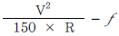
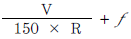
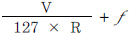
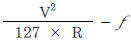
(정답률: 53%)
93. 재료의 성질과 관련된 용어의 설명으로 틀린 것은?
- 취성(brittleness) : 재료가 작은 변형에도 파괴가 되는 성질을 말한다.
- 인성(toughness) : 재료가 하중을 받아 파괴될 때까지의 에너지 흡수능력으로 나타낸다.
- 연성(ductility) : 재료에 인장력을 주어 가늘고 길게 늘어나게 할 수 있는 재료를 연성이 풍부하다고 한다.
- 강성(rigidity) : 큰 외력에 의해서도 파괴되지 않는 재료를 강성이 큰 재료라고 하며, 강도와 관계가 있으나, 탄성계수와는 관계가 없다.
(정답률: 52%)
94. 다음 [보기]에서 설명하는 합성수지 접착제는?
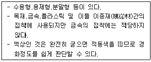
- 페놀수지 접착제
- 카세인 접착제
- 초산비닐 접착제
- 폴리에스테르수지 접착제
(정답률: 47%)
95. 식물의 근계생장에 가장 적당한 토양경도(산중식토양경도계)는 얼마인가?
- 18㎜
- 18~23㎜
- 23~27㎜
- 27~30㎜
(정답률: 45%)
96. 다음의 등고선에서 D-D'의 설명으로 맞는 것은?
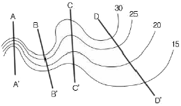
- 완경사 능선
- 완경사 계곡
- 급경사 능선
- 급경사 계곡
(정답률: 62%)
97. 다음의 구조계산의 순서 중 옳은 것은?
- 하중산정 → 응력산정 → 반력산정 → 응력과 재료의 허용강도 비교
- 하중산정 → 반력산정 → 응력산정 → 응력과 재료의 허용강도 비교
- 반력산정 → 응력산정 → 응력과 재료의 허용강도 비교 → 하중산정
- 반력산정 → 응력산정 → 하중산정 → 응력과 재료의 허용강도 비교
(정답률: 58%)
98. 도료의 건조제(dryer) 중 상온에서 기름에 용해되는 건조제에 해당하지 않는 것은?
- 연 (Pb)
- 초산염
- 붕산망간
- 이산화망간 (MnO2)
(정답률: 42%)
99. 콘크리트의 워커빌리티(workability)를 측정하는 방법이 아닌 것은?
- flow 시험
- 비비(vee-bee) 시험
- 모듈러스(modulus) 시험
- 리몰딩(remolding) 시험
(정답률: 43%)
100. 다음 중 원가계산에 의하여 공사비 구성항목을 분류할 때 순공사원가에 속하는 경비 항목이 아닌 것은?
- 연구개발비
- 복리후생비
- 가설비
- 일반관리비
(정답률: 46%)
6과목: 조경관리론
101. 다음 포장용수량의 얼마의 토양수분 함유상태가 잔디생육에 가장 적합한가?
- 20~30%
- 40~60%
- 60~80%
- 80~90%
(정답률: 50%)
102. 다음 펜폴드(Penfold)가 주장한 레크레이션 수용능력의 분류방법에 속하지 않는 것은?
- 물리적 수용능력
- 생태적 수용능력
- 심리적 수용능력
- 사회적 수용능력
(정답률: 46%)
103. 자연공원에서 동ㆍ식물 서식지 확대를 위한 모니터링(Monitoring)의 효과적 방법이라 하기 어려운 것은?
- 측정지표의 정성화
- 신뢰성 있는 기법의 도입
- 최소비용의 도모
- 위치 선정의 타당성
(정답률: 43%)
104. 일반적으로 네트워크에 의한 공정계획을 수립할 때 가장 먼저 수행해야 하는 것은?
- 공사기일을 조정한다.
- 각 작업의 순서를 결정한다.
- 각 작업의 시간을 산정한다.
- 프로젝트를 단위작업으로 분해한다.
(정답률: 56%)
1⑤. 최근 침입한 외래 해충으로 가로수인 양버즘나무(플라타너스)에 연 3회 대발생하여 잎을 황화시키는 흡즙성 해충은?
- 목화진딧물
- 소나무재선충
- 꽃노랑총채벌레
- 버즘나무방패벌레
(정답률: 57%)
106. 유지관리계획에서 비용계획을 진행시키는데 유의해야 할 사항으로 옳지 않은 것은?
- 비용절감 방법의 강구
- 시설이용 수입의 증대 방안
- 시설의 합리적인 지속 방안
- 관리성에 따른 시설 개량의 불균형 파악
(정답률: 57%)
107. 다음 주 기주교대를 하지 않는 병원균은?
- 소나무 혹병균
- 잣나무 털녹병균
- 소나무 잎떨림병균
- 배나무 붉은별무늬병균
(정답률: 37%)
108. 풍화작용에 의해 규산영광물이나 산화광물로부터 용해된 철성분이 토양내에서 산소 또는 물과 결합하여 토색에 영향을 미치는 작용은?
- 회색화작용
- 갈색화작용
- 이탄화작용
- 포드졸화작용
(정답률: 49%)
109. 잔디의 녹병(錄病, Rust)에 관한 설명으로 옳지 않은 것은?
- 토양전염병원균으로 고온 건조할 때 많다.
- 화학적인 방제는 디니코나졸수화제를 발병초기부터 일정 간격으로 사용한다.
- 병의 발생은 영양부족, 시비의 불균형, 과도한 답압 (踏壓) 등이 있다.
- 잔디의 잎줄기에서 늦가을에 흑색의 반점을 남기며 포자체로 월동한다.
(정답률: 38%)
110. 시공현장에서 부주의 발생에 관한 외적조건에 속하지 않는 것은?
- 기상조건
- 작업강도
- 의식의 우회
- 작업순서 부적당
(정답률: 59%)
111. 산불 발생 직후에 특히 많이 발생되는 수목 병해는?
- 소나무 혹병 (Pine Gall Rust)
- 리지나뿌리썩음병 (Rhizina Root Rot)
- 잣나무 피목가지마름병 (Dieback of Pines)
- 아밀라리아뿌리썩음병 (Armillaria Root Rot)
(정답률: 51%)
112. 수용능력(carrting capacity)에 대한 설명 중 틀린 것은?
- 수용능력개념 중 심미적 요소에 대한 개념은 없다.
- 레크레이션지역의 관리시 유용한 개념으로 이용되고 있다.
- 수용능력의 개념은 원래 생태계 관리분야에서 유래되었다.
- 이용에 따른 환경파괴를 최소화하고, 자원의 내구성을 높이며, 양호한 여가활동의 즐거움을 제공할 수 있는 기회를 증대한다.
(정답률: 65%)
113. 전정의 목적 중 토피아리와 같이 형상적 수형을 만드는 전정의 목적은?
- 미관상 목적
- 실용상 목적
- 생리상 목적
- 생육상 목적
(정답률: 67%)
114. 다음 그림의 종자저장 방법은?
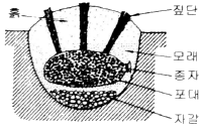
- 노천매장법
- 밀봉저장법
- 보호저장법
- 실온저장법
(정답률: 58%)
115. 공원관리에 있어서 시민참가에 관한 요건 중 옳지 않은 것은?
- 전문성 있는 작업이어야 한다.
- 주민의 자발적 참가를 필요조건으로 한다.
- 규모가 시민들의 참여능력을 넘지 않아야 한다.
- 시민참가에 의해 참가자간의 융화를 도모해야 한다.
(정답률: 74%)
116. 산성비 피해에 관한 설명 중 옳은 것은?
- 산성비는 토양의 인산결핍을 초래한다.
- 산성비는 토양의 염기포화도를 증가시키는 피해를 준다.
- 수소이온 자체는 직접적으로 수목에 영향을 주지 않는다.
- 산성비에 의한 잎의 습윤각 감소는 책상조직 파괴에 따른 결과이다.
(정답률: 43%)
117. 금속제 시설물의 부식이 가장 늦은 곳은?
- 해안별장지대
- 전원주택지
- 시가지나 공업지대
- 산악지의 스키장
(정답률: 64%)
118. 보호살균제(保護殺菌濟)의 특성 설명으로 틀린 것은?
- 강력한 포자발아 억제작용을 나타낸다.
- 약효가 일정기간 유지되는 지효성이 있다.
- 균사체에 대하여 강력한 살균작용을 나타낸다.
- 살포 후 작물체 표면에서의 부착성과 고착성이 우수하다.
(정답률: 52%)
119. 다음 [보기]에서 설명하는 비료는?
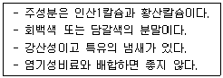
- 용성인비
- 질산칼슘
- 토머스인비
- 과린산석회
(정답률: 50%)
120. 농약의 잔류 허용기준을 산출하는데 해당되지 않는 것은?
- 안전계수
- 반수치사량
- 최대무작용량
- 1일 섭취허용량
(정답률: 37%)